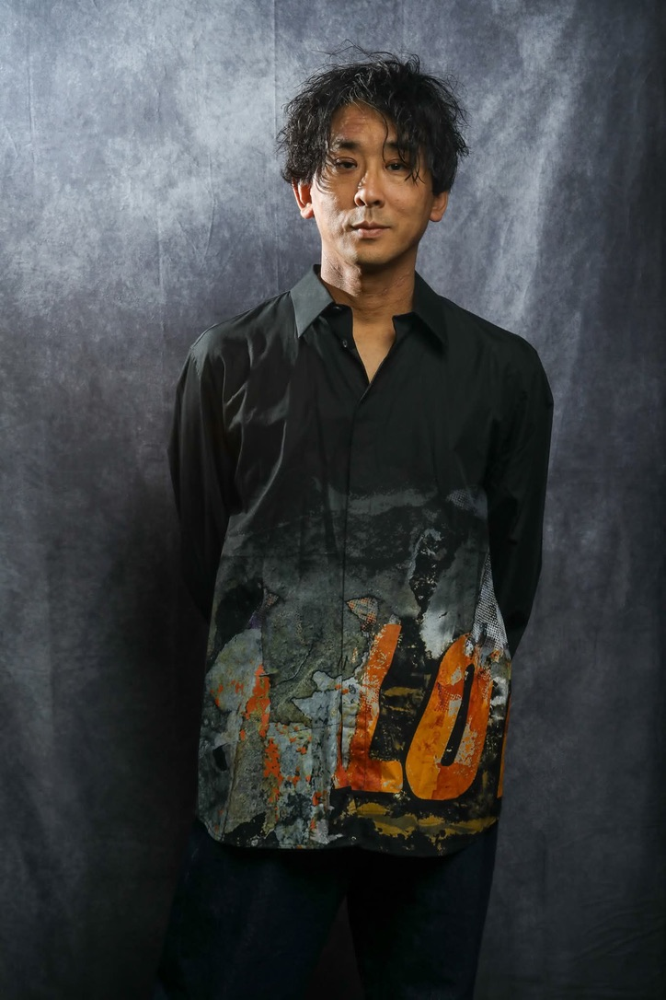

瞑想アーティスト 美湖
瞑想アーティスト、YouTuber。
アヤワスカ儀式で「宇宙の振動数を持つ声」予言の書アガスティアの葉で「聖なる世界のエネルギーを与える声」と記されている美湖。
シンガーとしてデビュー後メディアに多数出演。
日本、アジアでライブツアーを行う。
ネオスピチューバー美湖として宇宙意識でありのままのYouTubeが人気となり、書籍「ネオスピ」はAmazon総合1位に。
月蝕の対話
美湖 × 堀内恭隆 特別対談
美湖が生きている祈りの深部を、堀内恭隆が
問い、受け取り、言葉としてひらいていく。
2026.8.4TUE 21:00
アースジャーニーコミュニティ
参加無料
YouTuber
対話が、祈りを
ひらいていく。
情報空間クリエイター／
第6次元エンジニア
瞑想アーティスト、YouTuber。
アヤワスカ儀式で「宇宙の振動数を持つ声」予言の書アガスティアの葉で「聖なる世界のエネルギーを与える声」と記されている美湖。
シンガーとしてデビュー後メディアに多数出演。
日本、アジアでライブツアーを行う。
ネオスピチューバー美湖として宇宙意識でありのままのYouTubeが人気となり、書籍「ネオスピ」はAmazon総合1位に。

情報空間クリエイター／第6次元エンジニア
集合的無意識から未来のビジョンを受信し、言葉・物語・構造として社会に橋渡す「未来設計者」。
2010年に「LDM®（ライフ・デザイン・メソッド）」を開発し、インスピレーションやシンクロニシティの扱いを体系化。累計15,000名以上が受講している。
本対談では、美湖が生きている「祈り」の深部を問い、受け取り、言葉としてひらいていく。